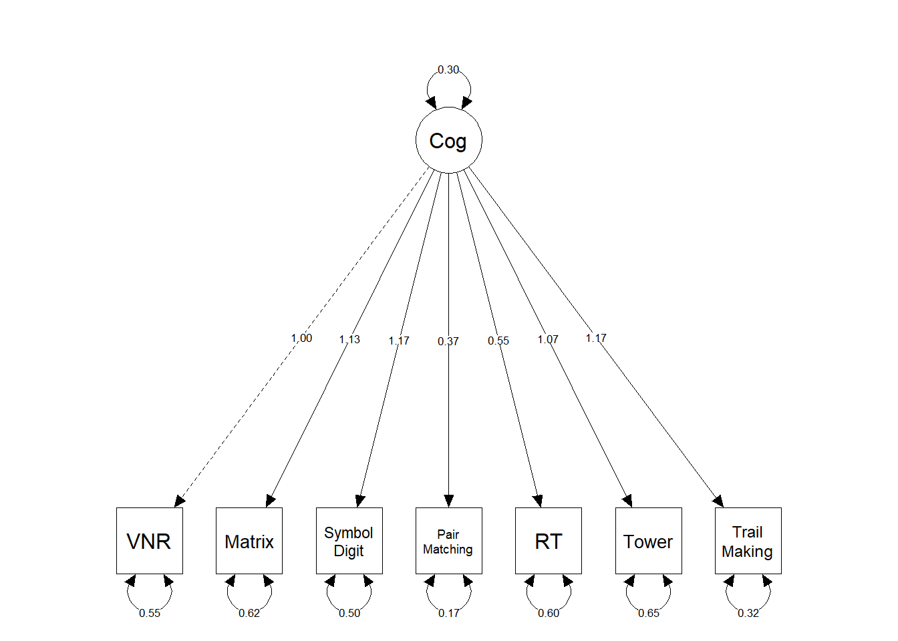

Behavioural trait definitions
The following scripts defines my UKB behavioural traits used for the analyses.
The script refers to a file named var_name.lis which stored the variable names used for analysis. It can be found here.
Summary statistics for the behavioural traits are displayed here.
#### this script defines phenotypes used in our morphometricity study
##########################
# Exclusion criteria are:
# 1. Must have at least one non-missing phenotypic values
# 2. MRI data must have been determined in addition to T2-Flair
# 3. Outliers outside of 4SD in the pheno variables will be removed (also for brain variables but we must process them first to know)
# This script follows theses steps:
# Read in pheno data
# Merge two datasets
# work out criteria and exclude people if needed
# Output:
# 1. File containing participant IDs to include
# 2. File with cleaned phenotypes
# 3. File with cleaned covariates
##################################################################################
# set wd to where pheno files are saved
setwd("/mnt/lustre/datasets/ukbiobank/ukb40933/phenotypes")
# load dependencies
library(data.table)
library(stringr)
# read in pheno data file 1
#pheno1 <- fread("ukb_40K_for_anna_final.csv", header=T, data.table=F)
pheno1 <- fread("ukb_40K_for_anna.csv", header=T, data.table=F)
# read in pheno data file 2
pheno2 <- fread("ukb46867.csv", header=T, data.table=F)
# merge pheno1 and pheno2
pheno <- merge(pheno1, pheno2, by="eid")
rm(list=c("pheno1", "pheno2"))
# harmonise column names (R doesn't like -)
names(pheno) <- str_replace_all(names(pheno), pattern="-", replacement="_")
# pheno[,grep(pattern = "1239", x=names(pheno))]
# names(pheno)[grep(pattern = "date_of_attending_assessment", x=names(pheno))]
# is.na(pheno$qualifications_f6138_2_0)
## Note: edu6138_2_0 has 267 missing participants, test if we can recover from other 6138 vars
## But they all have an education in edu6138_1_0 which we will use instead
## missing_edu<-pheno[is.na(pheno$qualifications_f6138_2_0),grep(pattern = "6138", x=names(pheno))]
## cigarettes daily: -10 stands for less than 1 a day
# read in list with variables that we want
ref_list <- read.table("/mnt/lustre/datasets/ukbiobank/ukb40933/imaging/scripts/pheno/var_name.lis", header=F, sep="\t")
names(ref_list) <- c("var","name")
# find pattern in names(pheno) and name accordingly (as stored in ref)
for(i in 1:nrow(ref_list)){
names(pheno)[grep(as.character(ref_list[i,"var"]), colnames(pheno))] <- as.character(ref_list[i,"name"])
}
# only keep variables from the list to reduce object size
keep <- append("eid",as.character(ref_list$name))
pheno <- pheno[,names(pheno) %in% keep]
# identify participants who have been analysed with T2-Flair
table(pheno$T2_FLAIR26500_2.0)
dim(pheno)
pheno[which(pheno$T2_FLAIR26500_2.0 ==0),]<-NA
# keep participants who have been analysed with T2Flair
pheno <- pheno[which(!is.na(pheno$eid)),]
table(pheno$T2_FLAIR26500_2.0)
dim(pheno)
# we lose 1300 participants -> 39277 remaining
########################################################################################################
## Build phenotypic variables
########################################################################################################
#################################################################################
## age
#################################################################################
# keep variables that contribute to age
age_pheno <- pheno[,c("eid","date_neuroimaging53_2_0","birth_monthf52_0_0","age21003_2_0","datefirstvisitf53_0_0")]
# work out month in which participant attended imaging
age_pheno$attendance_month<-as.numeric(substr(age_pheno$date_neuroimaging53_2_0,6,7))
# birth month is stored in writing, change to numerical values
age_pheno$birth_monthf52_0_0[which(age_pheno$birth_monthf52_0_0 == "January")] <- 1
age_pheno$birth_monthf52_0_0[which(age_pheno$birth_monthf52_0_0 == "February")] <- 2
age_pheno$birth_monthf52_0_0[which(age_pheno$birth_monthf52_0_0 == "March")] <- 3
age_pheno$birth_monthf52_0_0[which(age_pheno$birth_monthf52_0_0 == "April")] <- 4
age_pheno$birth_monthf52_0_0[which(age_pheno$birth_monthf52_0_0 == "May")] <- 5
age_pheno$birth_monthf52_0_0[which(age_pheno$birth_monthf52_0_0 == "June")] <- 6
age_pheno$birth_monthf52_0_0[which(age_pheno$birth_monthf52_0_0 == "July")] <- 7
age_pheno$birth_monthf52_0_0[which(age_pheno$birth_monthf52_0_0 == "August")] <- 8
age_pheno$birth_monthf52_0_0[which(age_pheno$birth_monthf52_0_0 == "September")] <- 9
age_pheno$birth_monthf52_0_0[which(age_pheno$birth_monthf52_0_0 == "October")] <- 10
age_pheno$birth_monthf52_0_0[which(age_pheno$birth_monthf52_0_0 == "November")] <- 11
age_pheno$birth_monthf52_0_0[which(age_pheno$birth_monthf52_0_0 == "December")] <- 12
table(age_pheno$birth_monthf52_0_0)
age_pheno$birth_monthf52_0_0 <- as.numeric(age_pheno$birth_monthf52_0_0)
# time difference/ lag between attendance and birth month (to work out how old in months they will have been at time of assessment)
age_pheno$add_months<-(age_pheno$attendance_month)-(age_pheno$birth_monthf52_0_0)
# this variable had integers between 11 and -11
# for example: -11 could mean I attended the center in January (1) but was born in December (12) -> we would want to add 1 month to age at assessment
# -6 would mean I attended in February (2) but was born in August (8) -> we would want to add 6 months to age at assessment
# 11 would mean I attended in December (12) but was born in January (1) -> we would want to add 11 months
# To obtain the number of months to add for the negative values, we add the negative value to 12 -> 12+(-6) = 6 or 12+(-11) = 1
# which is what the next line of code is doing
# if a value is below 0, add 12+(add_months), if not keep the value
age_pheno$add_months<-ifelse(age_pheno$add_months<0,(12+age_pheno$add_months),ifelse(age_pheno$add_months==0,0,age_pheno$add_months))
# there should only be positive (or 0) values left
summary(age_pheno$add_months)
# add extra months to age in months
age_pheno$age_in_months<-(age_pheno$age21003_2_0*12)+age_pheno$add_months
summary(age_pheno$age_in_months)
# Min. 1st Qu. Median Mean 3rd Qu. Max.
# 542.0 700.0 776.0 769.9 841.0 987.0
summary((age_pheno$age_in_months/12))
# Min. 1st Qu. Median Mean 3rd Qu. Max.
# 45.17 58.33 64.67 64.16 70.08 82.25
# there are no missing values left in age_in_months
sum(is.na(age_pheno$age_in_months))
# only keep non-missing participants
age_pheno <- age_pheno[!is.na(age_pheno$age_in_months),]
age_pheno <- age_pheno[,c("eid","age_in_months")]
### realised later OSCA wants IID FID value/ no col.names
age_pheno$FID <- age_pheno$eid
age_pheno <- age_pheno[,c("eid","FID","age_in_months")]
print(summary(age_pheno))
##### remove outliers outside of 4SDs
mean<-mean(age_pheno[,2], na.rm=T)
sd<-sd(age_pheno[,2], na.rm=T)
age_pheno[,3][which(age_pheno[,3] < mean - (sd*4) | age_pheno[,3] > mean + (sd*4))]<-NA
fwrite(age_pheno, file="/mnt/lustre/datasets/ukbiobank/ukb40933/phenotypes/age_pheno_nofid.txt", na = "NA", quote = F, sep = "\t", row.names=F, col.names=F)
rm("age_pheno")
#################################################################################
## sex
#################################################################################
sex_pheno <- pheno[,c("eid","sex31")]
table(sex_pheno$sex)
# Female Male
# 20674 18603
print("This is the number of non-missing entries in sex variable")
sum(!is.na(sex_pheno$sex))
#39277
# we want binary coding: 0 Female, 1 Male
sex_pheno$sex[which(sex_pheno$sex == "Female")] <- 0
sex_pheno$sex[which(sex_pheno$sex == "Male")] <- 1
sex_pheno <- sex_pheno[,c("eid", "sex")]
# only keep non-missing participants
sex_pheno <- sex_pheno[!is.na(sex_pheno$sex),]
print(table(sex_pheno$sex))
### realised later OSCA wants IID FID value/ no col.names
sex_pheno$FID <- sex_pheno$eid
sex_pheno <- sex_pheno[,c("eid","FID", "sex")]
print(summary(sex_pheno))
fwrite(sex_pheno, file="/mnt/lustre/datasets/ukbiobank/ukb40933/phenotypes/sex_pheno_nofid.txt", na = "NA", quote = F, sep = "\t", row.names=F, col.names=F, logical01 = T)
rm("sex_pheno")
#################################################################################
## BMI
#################################################################################
# for BMI we use the most recent available measurement (the one closest to neuroimaging visit)
bmi_pheno <- pheno[,c("eid","bmi21001_0_0","bmi21001_1_0","bmi21001_2_0")]
summary(bmi_pheno$bmi21001_2_0)
# Min. 1st Qu. Median Mean 3rd Qu. Max. NA's
# 13.39 23.49 25.87 26.50 28.80 58.04 1315
# if participant is missing from neuroimaging] visit, take from earlier visits
bmi_pheno$bmi <- ifelse(!is.na(bmi_pheno$bmi21001_2_0), bmi_pheno$bmi21001_2_0, bmi_pheno$bmi21001_1_0)
summary(bmi_pheno$bmi)
# Min. 1st Qu. Median Mean 3rd Qu. Max. NA's
# 13.39 23.49 25.87 26.50 28.80 58.04 1252
bmi_pheno$bmi <- ifelse(!is.na(bmi_pheno$bmi), bmi_pheno$bmi, bmi_pheno$bmi21001_0_0)
summary(bmi_pheno$bmi)
# Min. 1st Qu. Median Mean 3rd Qu. Max.
# 13.39 23.48 25.86 26.50 28.80 58.04
# only keep the relevant columns
bmi_pheno <- bmi_pheno[,c("eid","bmi")]
# only keep non-missing participants
bmi_pheno <- bmi_pheno[!is.na(bmi_pheno$bmi),]
print(summary(bmi_pheno))
### realised later OSCA wants IID FID value/ no col.names
bmi_pheno$FID <- bmi_pheno$eid
bmi_pheno <- bmi_pheno[,c("eid","FID", "bmi")]
#print(summary(bmi_pheno))
##### remove outliers outside of 4SDs
mean<-mean(bmi_pheno[,3], na.rm=T)
sd<-sd(bmi_pheno[,3], na.rm=T)
bmi_pheno[,3][which(bmi_pheno[,3] < mean - (sd*4) | bmi_pheno[,3] > mean + (sd*4))]<-NA
print(summary(bmi_pheno))
# save table
fwrite(bmi_pheno, file="/mnt/lustre/datasets/ukbiobank/ukb40933/phenotypes/bmi_pheno_nofid.txt", na = "NA", quote = F, sep = "\t", row.names=F, col.names=F)
rm("bmi_pheno")
#################################################################################
## Education
#################################################################################
edu_pheno <- pheno[,c("eid","edu6138_0_0","edu6138_0_1","edu6138_0_2","edu6138_0_3","edu6138_0_4","edu6138_0_5","edu6138_1_0","edu6138_1_1","edu6138_1_2","edu6138_1_3","edu6138_1_4","edu6138_1_5","edu6138_2_0","edu6138_2_1","edu6138_2_2","edu6138_2_3","edu6138_2_4","edu6138_2_5")]
table(edu_pheno$edu6138_2_0)
# A levels/AS levels or equivalent
# 4748
# College or University degree
# 18985
# CSEs or equivalent
# 1467
# None of the above
# 2427
# NVQ or HND or HNC or equivalent
# 2339
# O levels/GCSEs or equivalent
# 6950
#Other professional qualifications eg: nursing, teaching
# 1972
# Prefer not to answer
# 131
# here we use coding where an increasing category stands for higher education (easier to interpret)
for(j in 0:2){
for(i in 0:5){
row <- paste0("edu6138_",j,"_",i)
print(row)
edu_pheno[,row] <- str_replace_na(edu_pheno[,row], replacement = "-999")
edu_pheno[,row] <- gsub("College or University degree", "6", edu_pheno[,row])
edu_pheno[,row] <- gsub("A levels/AS levels or equivalent", "5", edu_pheno[,row])
edu_pheno[,row] <- gsub("O levels/GCSEs or equivalent", "4", edu_pheno[,row])
edu_pheno[,row] <- gsub("CSEs or equivalent", "3", edu_pheno[,row])
edu_pheno[,row] <- gsub("NVQ or HND or HNC or equivalent", "2", edu_pheno[,row])
edu_pheno[,row] <- gsub("Other professional qualifications eg: nursing, teaching", "1", edu_pheno[,row])
edu_pheno[,row] <- gsub("None of the above", "0", edu_pheno[,row])
edu_pheno[,row] <- gsub("Prefer not to answer", "-999", edu_pheno[,row])
#print(head(edu_pheno))
# store as numeric vector
before <- sum(is.na(edu_pheno[,row]),na.rm=T)
edu_pheno[,row] <- as.numeric(edu_pheno[,row])
after <- sum(is.na(edu_pheno[,row]),na.rm=T)
if(before != after){print("Lost entries in as.numeric argument"); break}
#print(table(edu_pheno[,row]))
}
}
# now we're looking for the row-wise maximum to determine a participants highest indicated educational status
# found this: https://www.datasciencemadesimple.com/row-wise-maximum-row-maximum-in-dataframe-r-2/
# with this function I can figure out which the highest number is across a participant as indicated at second time point
library(matrixStats)
edu_pheno$max_edu_2 = rowMaxs(as.matrix(edu_pheno[,c("edu6138_2_0","edu6138_2_1","edu6138_2_2","edu6138_2_3","edu6138_2_4","edu6138_2_5")]),na.rm=T)
## with the rowMaxs function, we still get some participants with -999 who either prefered not to answer, or had missing values at the neuroimaging visit (389 participants)
# this is why we obtain rowMaxs for all other visits as well
edu_pheno$max_edu_1 = rowMaxs(as.matrix(edu_pheno[,c("edu6138_1_0","edu6138_1_1","edu6138_1_2","edu6138_1_3","edu6138_1_4","edu6138_1_5")]),na.rm=T)
edu_pheno$max_edu_0 = rowMaxs(as.matrix(edu_pheno[,c("edu6138_0_0","edu6138_0_1","edu6138_0_2","edu6138_0_3","edu6138_0_4","edu6138_0_5")]),na.rm=T)
## we will delete participants who didn't answer in any of these three instances (20 participants)
edu_pheno[which(edu_pheno$max_edu_2 == -999 & edu_pheno$max_edu_1 == -999 & edu_pheno$max_edu_0 == -999),] <- NA
edu_pheno <- edu_pheno[!is.na(edu_pheno$eid),]
# we will prioritise later time points, closer to actual neuroimaging visit, they may have gotten a qualitification since their first assessment
edu_pheno$edu <- edu_pheno$max_edu_2
edu_pheno$edu[which(edu_pheno$edu == "-999")] <- edu_pheno$max_edu_1[which(edu_pheno$edu == "-999")] # through this step we gain 44 participants
edu_pheno$edu[which(edu_pheno$edu == "-999")] <- edu_pheno$max_edu_0[which(edu_pheno$edu == "-999")] # we gain 325 participants
# none missing by the end of this
table(edu_pheno$edu)
# 0 1 3 4 5 6 7
# 2513 1993 2370 1485 7011 4789 19096
edu_pheno <- edu_pheno[,c("eid","edu")]
# only keep non-missing participants
edu_pheno <- edu_pheno[!is.na(edu_pheno$edu),]
print(summary(edu_pheno))
### realised later OSCA wants IID FID value/ no col.names
edu_pheno$FID <- edu_pheno$eid
edu_pheno <- edu_pheno[,c("eid","FID", "edu")]
##### remove outliers outside of 4SDs
mean<-mean(edu_pheno[,3], na.rm=T)
sd<-sd(edu_pheno[,3], na.rm=T)
edu_pheno[,3][which(edu_pheno[,3] < mean - (sd*4) | edu_pheno[,3] > mean + (sd*4))]<-NA
print(summary(edu_pheno))
fwrite(edu_pheno, file="/mnt/lustre/datasets/ukbiobank/ukb40933/phenotypes/edu_pheno_nofid.txt", na = "NA", quote = F, sep = "\t", row.names=F, col.names=F)
rm("edu_pheno")
#################################################################################
## Cigarettes (waiting for variables 1249 and 1239 to determine)
#################################################################################
# first UKB asked currentsmokerf1239, if yes, get asked pastsmokerf1249
# then they asked how many cigarettes_dailyf2887
cig_pheno <- pheno[,c("eid","cigarettes_dailyf2887_2_0","cigarettes_dailyf2887_1_0","cigarettes_dailyf2887_0_0","currentsmokerf1239_2_0","currentsmokerf1239_1_0","currentsmokerf1239_0_0","pastsmokerf1249_0_0","pastsmokerf1249_1_0","pastsmokerf1249_2_0")]
## set all "Prefer not to answer" entries to missing
for(i in 0:2){
var_name <- paste0("currentsmokerf1239_",i,"_0")
cig_pheno[which(cig_pheno[,var_name] =="Prefer not to answer"),var_name] <- NA
var_name <- paste0("pastsmokerf1249_",i,"_0")
cig_pheno[which(cig_pheno[,var_name] =="Prefer not to answer"),var_name] <- NA
}
# delete participants who didn't answer anywhere
cig_pheno[which(is.na(cig_pheno$currentsmokerf1239_2_0) &
is.na(cig_pheno$currentsmokerf1239_1_0) &
is.na(cig_pheno$currentsmokerf1239_0_0) &
is.na(cig_pheno$pastsmokerf1249_0_0) &
is.na(cig_pheno$pastsmokerf1249_1_0) &
is.na(cig_pheno$pastsmokerf1249_2_0)),] <- NA
# make new variable
cig_pheno$smoking <- NA
## find participants who have been occasional smoked (many people have indicated that and some will later fall into other categories)
cig_pheno$smoking[which(cig_pheno$pastsmokerf1249_0_0 == "Smoked occasionally" | cig_pheno$pastsmokerf1249_0_0 == "I have never smoked" | cig_pheno$pastsmokerf1249_0_0 == "Just tried once or twice" &
cig_pheno$pastsmokerf1249_1_0 == "Smoked occasionally" | cig_pheno$pastsmokerf1249_1_0 == "I have never smoked" | cig_pheno$pastsmokerf1249_1_0 == "Just tried once or twice" &
cig_pheno$pastsmokerf1249_2_0 == "Smoked occasionally" | cig_pheno$pastsmokerf1249_2_0 == "I have never smoked" | cig_pheno$pastsmokerf1249_2_0 == "Just tried once or twice" &
cig_pheno$currentsmokerf1239_2_0 == "Only occasionally" | cig_pheno$currentsmokerf1239_2_0 == "No" &
cig_pheno$currentsmokerf1239_1_0 == "Only occasionally" | cig_pheno$currentsmokerf1239_1_0 == "No" &
cig_pheno$currentsmokerf1239_0_0 == "Only occasionally" | cig_pheno$currentsmokerf1239_0_0 == "No" )] <- "Occasionally"
# find participants who indicate at all time points that they are not current smokers AND who indicated at all time points that they have not smoked in the past
cig_pheno$smoking[which(cig_pheno$currentsmokerf1239_2_0 == "No" & cig_pheno$currentsmokerf1239_1_0 == "No" & cig_pheno$currentsmokerf1239_0_0 == "No" & cig_pheno$pastsmokerf1249_0_0 == "I have never smoked" & cig_pheno$pastsmokerf1249_1_0 == "I have never smoked" & cig_pheno$pastsmokerf1249_2_0 == "I have never smoked")] <- "Never_smoked"
## find participants who only tried once or twice (pastsmoker) but then indicated at all time points that they are no current smokers
cig_pheno$smoking[which(cig_pheno$pastsmokerf1249_0_0 == "Just tried once or twice" |
cig_pheno$pastsmokerf1249_1_0 == "Just tried once or twice" |
cig_pheno$pastsmokerf1249_2_0 == "Just tried once or twice" &
cig_pheno$currentsmokerf1239_2_0 == "No" &
cig_pheno$currentsmokerf1239_1_0 == "No" &
cig_pheno$currentsmokerf1239_0_0 == "No")]<- "Tried"
# most people have indicated at some point that they occasionally smoked
# now we try to find the people who said at least once that they smoke more regularly
cig_pheno$smoking[which(cig_pheno$pastsmokerf1249_0_0 == "Smoked on most or all days" |
cig_pheno$pastsmokerf1249_1_0 == "Smoked on most or all days" |
cig_pheno$pastsmokerf1249_2_0 == "Smoked on most or all days" |
cig_pheno$currentsmokerf1239_2_0 == "Yes, on most or all days" |
cig_pheno$currentsmokerf1239_1_0 == "Yes, on most or all days" |
cig_pheno$currentsmokerf1239_0_0 == "Yes, on most or all days")]<- "Ever_Regularly"
# we have 5 participants left who have mostly missing data, but indicate at one time point that they either smoked occasionally or tried once or twice
# this is not an ideal way of doing it because it relies on manually checking the data but it's quicker
cig_pheno$smoking[which(is.na(cig_pheno$smoking) & cig_pheno$currentsmokerf1239_2_0 == "Only occasionally")] <- "Occasionally"
cig_pheno$smoking[which(is.na(cig_pheno$smoking) & cig_pheno$pastsmokerf1249_2_0 == "Just tried once or twice")] <- "Tried"
table(cig_pheno$smoking)
#Ever_Regularly Never_smoked Occasionally Tried
# 11162 2470 18198 7446
# use cigarettes_dailyf2887_2_0 variable to find out if we can refine the smokers groups more
## -10 is less than 1 a day -> 1
## -1 is do not know -> NA
for(i in 0:2){
var_name <- paste0("cigarettes_dailyf2887_",i,"_0")
cig_pheno[which(cig_pheno[,var_name] == -10),var_name] <- 1
cig_pheno[which(cig_pheno[,var_name] == -1),var_name] <- NA
}
# get an average of smoked cigarettes across three time points
cig_pheno$cigarettes_daily <- rowMeans(cig_pheno[,c("cigarettes_dailyf2887_2_0","cigarettes_dailyf2887_1_0","cigarettes_dailyf2887_0_0")],na.rm=T)
# check that non-smokers and "Tried" have not answered this question
if(nrow(cig_pheno[which(cig_pheno$smoking == "Tried" & !is.na(cig_pheno$cigarettes_daily)),]) !=0){print("We have someone who's only tried a cigarette once or twice who indicates amounts of cigarettes smoked"); break}
if(nrow(cig_pheno[which(cig_pheno$smoking == "Never_smoked" & !is.na(cig_pheno$cigarettes_daily)),]) !=0){print("We have someone who's never smoked who indicates amounts of cigarettes smoked"); break}
# check that the ones who didn't answer the daily cigarettes question are only occasional smokers
nrow(cig_pheno[which(cig_pheno$smoking == "Occasionally" & !is.na(cig_pheno$cigarettes_daily)),]) # none either
# split regular smokers into quantiles based on their daily cigarettes indication
cig_pheno$smoking[which(cig_pheno$cigarettes_daily <= quantile(cig_pheno$cigarettes_daily,0.25, na.rm=T))] <- "Regular_bottomquantile"
cig_pheno$smoking[which(cig_pheno$cigarettes_daily > quantile(cig_pheno$cigarettes_daily,0.25, na.rm=T) & cig_pheno$cigarettes_daily <= quantile(cig_pheno$cigarettes_daily,0.5, na.rm=T))] <- "Regular_2ndquantile"
cig_pheno$smoking[which(cig_pheno$cigarettes_daily > quantile(cig_pheno$cigarettes_daily,0.5, na.rm=T) & cig_pheno$cigarettes_daily <= quantile(cig_pheno$cigarettes_daily,0.75, na.rm=T))] <- "Regular_3rdquantile"
cig_pheno$smoking[which(cig_pheno$cigarettes_daily > quantile(cig_pheno$cigarettes_daily,0.75, na.rm=T) & cig_pheno$cigarettes_daily <= quantile(cig_pheno$cigarettes_daily,1, na.rm=T))] <- "Regular_4thquantile"
# If I define it this way I will have to get rid of the regular smokers who didn't indicate how many cigarettes they use :(
cig_pheno$smoking <- ifelse(cig_pheno$smoking == "Ever_Regularly" & is.na(cig_pheno$cigarettes_daily), NA, cig_pheno$smoking)
## use numeric values instead of categories
cig_pheno$smoking[which(cig_pheno$smoking == "Never_smoked")] <- 0
cig_pheno$smoking[which(cig_pheno$smoking == "Tried")] <- 1
cig_pheno$smoking[which(cig_pheno$smoking == "Occasionally")] <- 2
cig_pheno$smoking[which(cig_pheno$smoking == "Regular_bottomquantile")] <- 3
cig_pheno$smoking[which(cig_pheno$smoking == "Regular_2ndquantile")] <- 4
cig_pheno$smoking[which(cig_pheno$smoking == "Regular_3rdquantile")] <- 5
cig_pheno$smoking[which(cig_pheno$smoking == "Regular_4thquantile")] <- 6
cig_pheno$smoking <- as.numeric(cig_pheno$smoking)
summary(cig_pheno$smoking)
cig_pheno <- cig_pheno[,c("eid", "smoking")]
# only keep non-missing participants
cig_pheno <- cig_pheno[!is.na(cig_pheno$smoking),]
### realised later OSCA wants IID FID value/ no col.names
cig_pheno$FID <- cig_pheno$eid
cig_pheno <- cig_pheno[,c("eid","FID", "smoking")]
print(summary(cig_pheno))
##### remove outliers outside of 4SDs
mean<-mean(cig_pheno[,3], na.rm=T)
sd<-sd(cig_pheno[,3], na.rm=T)
cig_pheno[,3][which(cig_pheno[,3] < mean - (sd*4) | cig_pheno[,3] > mean + (sd*4))]<-NA
print(summary(cig_pheno))
fwrite(cig_pheno, file="/mnt/lustre/datasets/ukbiobank/ukb40933/phenotypes/cig_pheno_nofid.txt", na = "NA", quote = F, sep = "\t", row.names=F, col.names=F)
rm("cig_pheno")
#################################################################################
## Alcohol
#################################################################################
alc_pheno <- pheno[,c("eid","frequency_alcohol20414_0.0","former_drinkers20406_0.0")]
#-818 Prefer not to answer
#0 Never
#1 Monthly or less
#2 2 to 4 times a month
#3 2 to 3 times a week
#4 4 or more times a week
# we have many missing values here: 12049
sum(is.na(alc_pheno$frequency_alcohol20414_0.0))
# we have 21 cases that prefered not to say, we can't recover them
sum(alc_pheno$frequency_alcohol20414_0.0 == -818, na.rm=T)
# the following command seems to remove both missing and the 21 (-818) cases
alc_pheno <- alc_pheno[which(alc_pheno$frequency_alcohol20414_0.0 != -818),]
sum(is.na(alc_pheno$frequency_alcohol20414_0.0))
sum(alc_pheno$frequency_alcohol20414_0.0 == -818)
## find out how many ex-drinker there are and remove them too
table(alc_pheno$former_drinkers20406_0.0)
#-818 Prefer not to answer (remove)
#-121 Do not know (remove)
#0 No (keep)
#1 Yes (remove)
# https://www.tandfonline.com/doi/full/10.1080/16066350500497983
# Former drinkers had an elevated mortality risk compared with both ‘abstainers’ and light drinkers in the pooled model
# Is it reasonable to assume that drinkers are at a category above heavy drinkers?
# I think it's safer to remove them, there are only 543 former drinkers (and they were only asked this question if they previously indicated that they have ever been addicted to any substance or behavior)
# also remove the ones who don't know: 114 participants
# add category to former_drinkers20406_0.0 that indicates that NA stands for not ever having been addicted
# give those value 2
alc_pheno$former_drinkers20406_0.0[which(is.na(alc_pheno$former_drinkers20406_0.0))] <- 2
# remove the ones who prefered not to answer (6 participants)
alc_pheno <- alc_pheno[which(alc_pheno$former_drinkers20406_0.0 != -818),]
# remove the ones who didn't know (114 participnats)
alc_pheno <- alc_pheno[which(alc_pheno$former_drinkers20406_0.0 != -121),]
# remove the ones who admit to having been former drinkers (543 participnats)
alc_pheno <- alc_pheno[which(alc_pheno$former_drinkers20406_0.0 != 1),]
# now we have 860 who answered that they were never addicted to alcohol
# and 377754 who haven't been asked this question because they never were addicted to alcohol
table(alc_pheno$frequency_alcohol20414_0.0)
# 0 1 2 3 4
# 1770 3282 5072 8467 7953
# it's massively skewed
alc_pheno <- alc_pheno[,c("eid","frequency_alcohol20414_0.0")]
names(alc_pheno) <- c("IID", "alc_freq")
# only keep non-missing participants
alc_pheno <- alc_pheno[!is.na(alc_pheno$alc_freq),]
print(summary(alc_pheno))
### realised later OSCA wants IID FID value/ no col.names
alc_pheno$FID <- alc_pheno$IID
alc_pheno <- alc_pheno[,c("IID","FID", "alc_freq")]
##### remove outliers outside of 4SDs
mean<-mean(alc_pheno[,3], na.rm=T)
sd<-sd(alc_pheno[,3], na.rm=T)
alc_pheno[,3][which(alc_pheno[,3] < mean - (sd*4) | alc_pheno[,3] > mean + (sd*4))]<-NA
fwrite(alc_pheno, file="/mnt/lustre/datasets/ukbiobank/ukb40933/phenotypes/alc_pheno_nofid.txt", na = "NA", quote = F, sep = "\t", row.names=F, col.names=F)
rm("alc_pheno")
#################
## Covariates
#################
#center_f54_2_0
#x_position_scannerf25756_2_0
#y_position_scannerf25757_2_0
#z_position_scannerf25758_2_0
cov_pheno <- pheno[,c("eid","center_f54_2_0","x_position_scannerf25756_2_0","y_position_scannerf25757_2_0","z_position_scannerf25758_2_0")]
cov_pheno$FID <- cov_pheno$eid
names(cov_pheno)<-c("eid","center","x_position_scanner","y_position_scanner","z_position_scanner","IID")
### realised later OSCA wants IID FID value/ no col.names
#cov_pheno$FID <- cov_pheno$IID
qcov_pheno <- cov_pheno[,c("eid","IID","x_position_scanner","y_position_scanner","z_position_scanner")]
summary(qcov_pheno)
fwrite(qcov_pheno, file="/mnt/lustre/datasets/ukbiobank/ukb40933/phenotypes/qcovariates_nofid.txt", na = "NA", quote = F, sep = "\t", row.names=F, col.names=F)
bcov_pheno <- cov_pheno[,c("eid","IID","center")]
bcov_pheno$center[bcov_pheno$center==11025]<-"center1"
bcov_pheno$center[bcov_pheno$center==11026]<-"center2"
bcov_pheno$center[bcov_pheno$center==11027]<-"center3"
summary(bcov_pheno)
fwrite(bcov_pheno, file="/mnt/lustre/datasets/ukbiobank/ukb40933/phenotypes/bcovariates_nofid.txt", na = "NA", quote = F, sep = "\t", row.names=F, col.names=F)
#################################################################################
## Cog
#################################################################################
# Strategy to derive cog variables
# 1. Standardise vars
# 2. Get composite mean values across multiple time points and variables
# 3. factor analyse them and extract factor scores
# names(pheno)[grep(pattern = "23324", x=names(pheno))]
## as we want to get closest to the time point where brain was measured, we will go with all variables that have been assessed during neuroimaging visit
## They are: verbal_numerical_reasoning_f20016_2_0 TrailMakingB_6350_2_0 Matrix_f6373_2_0 Tower21004_2_0 Symbol_Digit23324_2_0 RT_20023_2_0 Pairs_Matchingf399_2_1/2/3
## If anything is missing, replace with:
# 1 # verbal_numerical_reasoning_f20016_2_0 with verbal_numerical_reasoning_f20016_1_0, if also missing then verbal_numerical_reasoning_f20016_0_0, then verbal_numerical_reasoning_f20191_0_0
# 2 # TrailMakingB_6350_2_0, if missing then TrailMakingB_20157_0_0 -> totally different scale but there is no earlier occasion!!
# 3 # Matrix_f6373_2_0 and also Matrix_f6373_3_0
# 4 # Symbol_Digit23324_2_0 and Symbol_Digit23324_3_0 and Symbol_Digit20159_0_0
# 5 # Pairs Matching 3 occurences at each assessment Pairs_Matchingf399_2_? Pairs_Matchingf399_1_? Pairs_Matchingf399_0_?
# 6 # RT_20023_2_0 RT_20023_1_0 RT_20023_0_0
# 7 # Tower21004_2_0 Tower21004_3_0
# name cog vars of interest
VNR_vars <- c("verbal_numerical_reasoning_f20016_2_0","verbal_numerical_reasoning_f20016_1_0","verbal_numerical_reasoning_f20016_0_0", "verbal_numerical_reasoning_f20191_0_0")
Matrix_vars <-c("Matrix_f6373_2_0","Matrix_f6373_3_0")
SymbolDigit_vars <- c("Symbol_Digit23324_2_0","Symbol_Digit23324_3_0","Symbol_Digit20159_0_0")
PairMatching_vars <- c("Pairs_Matchingf399_2_1","Pairs_Matchingf399_2_2","Pairs_Matchingf399_2_3","Pairs_Matchingf399_1_1","Pairs_Matchingf399_1_2","Pairs_Matchingf399_1_3","Pairs_Matchingf399_0_1","Pairs_Matchingf399_0_2","Pairs_Matchingf399_0_3")
RT_vars <-c("RT_20023_2_0","RT_20023_1_0","RT_20023_0_0")
Tower_vars <-c("Tower21004_2_0","Tower21004_3_0")
TrailMaking_vars <- c("TrailMakingB_6350_2_0","TrailMakingB_20157_0_0")
# item 6350: entry of zero means not completed
pheno$TrailMakingB_6350_2_0 <- ifelse(pheno$TrailMakingB_6350_2_0 <= 0.0, NA, pheno$TrailMakingB_6350_2_0)
all_vars <- c(VNR_vars,Matrix_vars,SymbolDigit_vars,PairMatching_vars,RT_vars,Tower_vars,TrailMaking_vars)
#######
# In some tests a higher value means better cognitive ability (more puzzles solved)
# But in others a lower value means better cognitive ability (longer time spent to solve task)
# We will scale the variables so that higher scores always mean better cognitive ability
## Pairs Matching: Number of incorrect matches -> the fewer the better
reverse=function(a){
a * (-1)
}
pheno[,c(PairMatching_vars,TrailMaking_vars,RT_vars)] <- apply(pheno[,c(PairMatching_vars,TrailMaking_vars,RT_vars)],2,FUN=reverse)
# Standardise variables
normFunc <- function(x){(x-mean(x, na.rm = T))/sd(x, na.rm = T)}
pheno[,all_vars] <- apply(pheno[,all_vars],2,normFunc)
summary(pheno[,all_vars])
##############################
## 1 Verbal-numerical reasoning
##############################
pheno$mean_VNR <- rowMeans(pheno[,VNR_vars],na.rm=T)
summary(pheno$mean_VNR)
# Min. 1st Qu. Median Mean 3rd Qu. Max. NA's
#-3.2657 -0.7896 0.1822 -0.0202 0.6681 3.1312 1065
##############################
## 2 Matrix
##############################
pheno$mean_Matrix <- rowMeans(pheno[,Matrix_vars],na.rm=T)
summary(pheno$mean_Matrix)
# Min. 1st Qu. Median Mean 3rd Qu. Max. NA's
# -3.929 -0.462 0.008 -0.009 0.478 3.296 12723
##############################
## 3 Symbol Digit
##############################
pheno$mean_SymbolDigit <- rowMeans(pheno[,SymbolDigit_vars],na.rm=T)
summary(pheno$mean_SymbolDigit)
# Min. 1st Qu. Median Mean 3rd Qu. Max. NA's
# -4.077 -0.658 0.010 -0.034 0.644 6.798 5898
##############################
## 4 Pairs Matching
##############################
pheno$mean_PairMatching <- rowMeans(pheno[,PairMatching_vars],na.rm=T)
summary(pheno$mean_PairMatching)
# Min. 1st Qu. Median Mean 3rd Qu. Max. NA's
#-0.83428 -0.32487 -0.11068 0.01629 0.21788 9.07155 33
##############################
## 5 Reaction Time
##############################
#RT_vars
pheno$mean_RT <- rowMeans(pheno[,RT_vars],na.rm=T)
summary(pheno$mean_RT)
##############################
## 6 Tower
##############################
# Tower_vars
pheno$mean_Tower <- rowMeans(pheno[,Tower_vars],na.rm=T)
summary(pheno$mean_Tower)
# Min. 1st Qu. Median Mean 3rd Qu. Max. NA's
# -3.190 -0.590 0.028 -0.009 0.646 2.500 12920
##############################
## 7 TrailMaking
##############################
# TrailMaking_vars
## 0 represents "Trail not completed
pheno$mean_TrailMaking <- rowMeans(pheno[,TrailMaking_vars],na.rm=T)
summary(pheno$mean_TrailMaking)
# Min. 1st Qu. Median Mean 3rd Qu. Max. NA's
# -1.702 -0.589 -0.183 0.034 0.385 20.288 7437
##################################################
## Create Factor Scores
##################################################
library(lavaan)
gpheno <- pheno[,c("eid","mean_VNR", "mean_Matrix", "mean_SymbolDigit", "mean_PairMatching", "mean_RT", "mean_Tower", "mean_TrailMaking")]
#### remove all participants who have missing values in all cog vars
if(sum(rowSums(is.na(gpheno)) == 7) == 0){print("Each participant has at least one cognitive measurement - woop")}
# remove outliers for each cognitive variable
colSums(!is.na(gpheno))
for(i in c("mean_VNR", "mean_Matrix", "mean_SymbolDigit", "mean_PairMatching", "mean_RT", "mean_Tower", "mean_TrailMaking")){
# calculate volume specific mean
mean_var<-mean(gpheno[,i],na.rm = T)
# calculate volume specific sd
sd_var <- sd(gpheno[,i], na.rm=T)
# remove values that are beyond 4 SDs
gpheno[,i][which(gpheno[,i] < mean_var - (sd_var*4) | gpheno[,i] > mean_var + (sd_var*4))]<-NA
}
colSums(!is.na(gpheno))
# build SEM model
gmodel <- "Cog =~ mean_VNR + mean_Matrix + mean_SymbolDigit + mean_PairMatching + mean_RT + mean_Tower + mean_TrailMaking"
# fit SEM model
fit<-cfa(gmodel, data = gpheno,missing = "ML")
save(fit, file = "/mnt/lustre/datasets/ukbiobank/ukb40933/phenotypes/model_fit.RData")
print(summary(fit))
# predict individual-level factor scores
test_gpheno <- as.data.frame(lavPredict(fit, newdata = gpheno, type = "lv", append.data = T))
# merge with gpheno to get correct eid's
gpheno <- merge(test_gpheno, gpheno, by=c("mean_VNR", "mean_Matrix", "mean_SymbolDigit", "mean_PairMatching", "mean_RT", "mean_Tower", "mean_TrailMaking"))
gpheno <- gpheno[,c("eid", "Cog")]
# only keep non-missing participants
gpheno <- gpheno[!is.na(gpheno$Cog),]
### realised later OSCA wants IID FID value/ no col.names
gpheno$FID <- gpheno$eid
gpheno <- gpheno[,c("eid","FID","Cog")]
##### remove outliers outside of 4SDs
mean<-mean(gpheno$Cog, na.rm=T)
sd<-sd(gpheno$Cog, na.rm=T)
gpheno$Cog[which(gpheno$Cog < mean - (sd*4) | gpheno$Cog > mean + (sd*4))]<-NA
print(summary(gpheno))
fwrite(gpheno, file="/mnt/lustre/datasets/ukbiobank/ukb40933/phenotypes/gpheno_nofid.txt", na = "NA", quote = F, sep = "\t", row.names=F, col.names=F)General cognitive ability
Above, we run a structural equation model (SEM) to get a common factor of general cognitive ability from seven cognitive traits measured in UKB. Below, we display fit statistics for this factor.
Code used for plotting was adapted based on this blog.
library(lavaan)
library(semPlot)
load("model_fit_reverse.RData")
## fit_reserve gives the same results as fit but with fully positive factor loadings (by reverse I mean that I have multiplied items with negative polarity by -1 so that all loadings are positive)
## we now want to get the variance explained by the model:
## we take the sum of the variance output for each item and divide by the number of items
total_variance_explained <- mean(1-mean(rowSums(inspect(fit_reverse,what="std")$theta)))
print(paste0("The total variance explained by this model is ", round(total_variance_explained, digits=2)))## [1] "The total variance explained by this model is 0.34"labels <- c("VNR", "Matrix", "Symbol\nDigit", "Pair\nMatching", "RT", "Tower", "Trail\nMaking","Cog")
#setwd("C:/Users/k1894405/OneDrive - King's College London/PhD/Projects/Comparing labelling protocols/analysis/Rmarkdown")
#tiff("sem_reverse.tiff", width = 10, height = 3, units = 'in', res=1000)
#https://www.r-graph-gallery.com/74-margin-and-oma-cheatsheet
#grid <- par(mfrow=c(1, 2), oma=c(0,0,3,0), mar=c(0,0,0,0))
semPaths(fit_reverse,
what = "paths",
whatLabels="est",
intercepts=FALSE,
style="OpenMx",
layout = "tree",
nodeLabels=labels,
curvePivot=TRUE,
edge.color="black",
sizeMan = 8,
pastel=TRUE,
rainbowStart = 0.5,
nDigits = 2,
title = TRUE)
#title(main="General cognitive ability\nUnstandardised and standardised factor loadings", outer = T, cex.main = 0.7)
#par(grid)
#dev.off()
summary(fit_reverse, rsq = TRUE, fit.measures=T)## lavaan 0.6-7 ended normally after 30 iterations
##
## Estimator ML
## Optimization method NLMINB
## Number of free parameters 21
##
## Number of observations 39277
## Number of missing patterns 56
##
## Model Test User Model:
##
## Test statistic 1415.623
## Degrees of freedom 14
## P-value (Chi-square) 0.000
##
## Model Test Baseline Model:
##
## Test statistic 43270.123
## Degrees of freedom 21
## P-value 0.000
##
## User Model versus Baseline Model:
##
## Comparative Fit Index (CFI) 0.968
## Tucker-Lewis Index (TLI) 0.951
##
## Loglikelihood and Information Criteria:
##
## Loglikelihood user model (H0) -263294.880
## Loglikelihood unrestricted model (H1) -262587.068
##
## Akaike (AIC) 526631.759
## Bayesian (BIC) 526811.905
## Sample-size adjusted Bayesian (BIC) 526745.167
##
## Root Mean Square Error of Approximation:
##
## RMSEA 0.050
## 90 Percent confidence interval - lower 0.048
## 90 Percent confidence interval - upper 0.053
## P-value RMSEA <= 0.05 0.354
##
## Standardized Root Mean Square Residual:
##
## SRMR 0.024
##
## Parameter Estimates:
##
## Standard errors Standard
## Information Observed
## Observed information based on Hessian
##
## Latent Variables:
## Estimate Std.Err z-value P(>|z|)
## Cog =~
## mean_VNR 1.000
## mean_Matrix 1.132 0.014 80.486 0.000
## mean_SymbolDgt 1.171 0.014 85.197 0.000
## mean_ParMtchng 0.372 0.006 64.932 0.000
## mean_RT 0.551 0.010 55.067 0.000
## mean_Tower 1.065 0.014 75.198 0.000
## mean_TrailMkng 1.167 0.013 91.204 0.000
##
## Intercepts:
## Estimate Std.Err z-value P(>|z|)
## .mean_VNR -0.067 0.005 -14.267 0.000
## .mean_Matrix -0.021 0.006 -3.578 0.000
## .mean_SymbolDgt -0.044 0.005 -8.632 0.000
## .mean_ParMtchng 0.003 0.002 1.412 0.158
## .mean_RT 0.008 0.004 1.842 0.066
## .mean_Tower -0.024 0.006 -3.991 0.000
## .mean_TrailMkng -0.023 0.005 -4.861 0.000
## Cog 0.000
##
## Variances:
## Estimate Std.Err z-value P(>|z|)
## .mean_VNR 0.546 0.005 111.624 0.000
## .mean_Matrix 0.617 0.006 96.418 0.000
## .mean_SymbolDgt 0.503 0.005 99.524 0.000
## .mean_ParMtchng 0.175 0.001 127.191 0.000
## .mean_RT 0.603 0.005 131.979 0.000
## .mean_Tower 0.654 0.007 99.654 0.000
## .mean_TrailMkng 0.321 0.004 82.629 0.000
## Cog 0.297 0.005 54.118 0.000
##
## R-Square:
## Estimate
## mean_VNR 0.353
## mean_Matrix 0.382
## mean_SymbolDgt 0.447
## mean_ParMtchng 0.190
## mean_RT 0.130
## mean_Tower 0.340
## mean_TrailMkng 0.558
By Anna Elisabeth Fürtjes
anna.furtjes@kcl.ac.uk